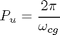

Learning PID Tuning II: Stability Margin
The PID controller is the most widely used controller in various engineering systems. However, appropriately tuning a PID controller is not an easy task althrough it has only three parameters at most. The difficulty particially comes from some comfilict requirements of control system performance and partially is due to complicated impacts of PID parameters on control performance. This submission provides the second tutorial on PID tuning using the stability margin.
Contents
Ziegler-Nichols Tuning Rule
Ziegler-Nichols tuning rule was the first such effort to provide a practical approach to tune a PID controller. According to the rule, a PID controller is tuned by firstly setting it to the P-only mode but adjusting the gain to make the control system in continuous oscillation. The corresponding gain is referred to as the ultimate gain (Ku) and the oscillation period is termed as the ultimated period (Pu). Then, the PID controller parameters are determined from Ku and Pu using the Ziegler-Nichols tuning table.
| Controller | Kc | Ti | Td |
| P | Ku / 2 | ||
| PI | Ku / 2.2 | Pu / 1.2 | |
| PID | Ku / 1.7 | Pu / 2 | Pu / 8 |
Determine the Ultimate Gain and Period
The key step of the Ziegler-Nichols tuning approach is to determine the untimate gain and period. However, to determine the ultimate gain and period experimentally is time comsuming. Since the continuous oscillation mode correcponds to the critical stable condition, for linear systems, such a condition can be easily determined through stability margins. Other tools, such as the Routh criterion and the Evans root locus, cannot deal with a time-delay directly.
Let the plant have gain margin Gm at crossover frequency Wcg. This equivalent to connect with a unit gain controller. Therefore, if the controller gain increases by Gm, then the system will oscillate at frequency Wcg. Therefore, Ku and Pu can be determined from Gm and Wcg as follows:
or

Example: PI controller for a first-order plus time-delay system
The plant has a unit gain, time constant 10 and time delay 2
T=10; dt=2; G=tf(1,[T 1]); G.InputDelay=dt; % use the Ziegler-Nichols PID design tool [k,ku,pu]=znpidtuning(G,2); % verify Ku and Pu using step response of G*ku in 5 periods step(feedback(ss(G*ku),1),5*pu)
Closed-loop step response
the PI controller transfer function
C=k.kc*(1+tf(1,[k.ti 0])); % get the closed-loop model in state space form since MATLAB/Control Toolbox % support time-delay only in state-space form. H=minreal(feedback(ss(G*C),1)); % closed-loop step response step(H)

Closed-loop performance comparison
The above result is compared with the PI controller tuned based on the Process Reaction Curve Appraoch. The PI parameters from this approach are as follows:
kc=0.9*T/(1*dt); ti=3.33*dt; C1=kc*(1+tf(1,[ti 0])); H1=minreal(feedback(ss(G*C1),1)); hold step(H1) grid legend('stability margin approach','process reaction curve appraoch')
Current plot held
Conclusion
For this particular example, the stability margin based tuning results a smaller overshooting but slightly slower response.